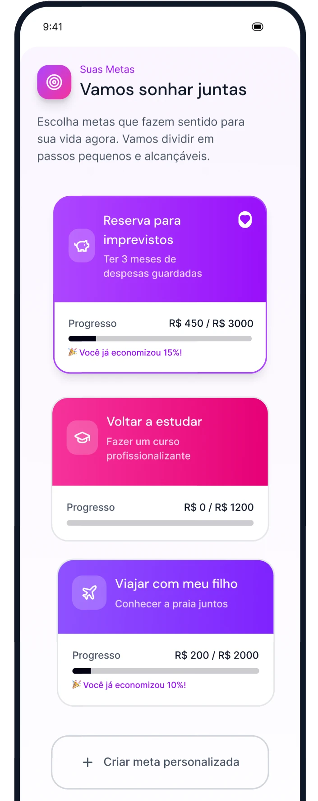
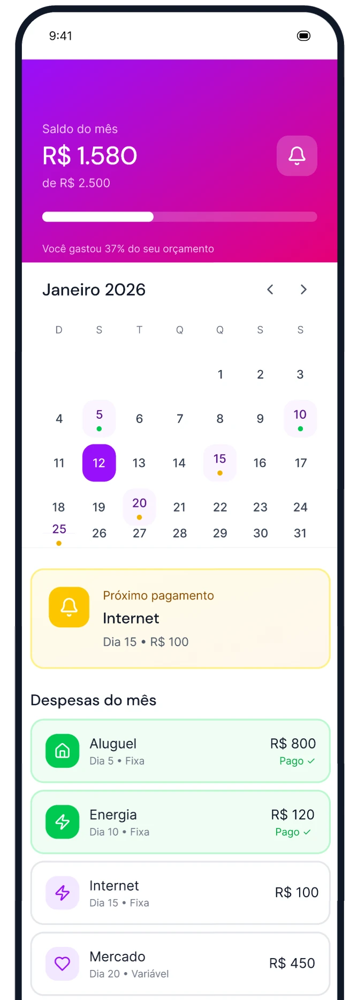
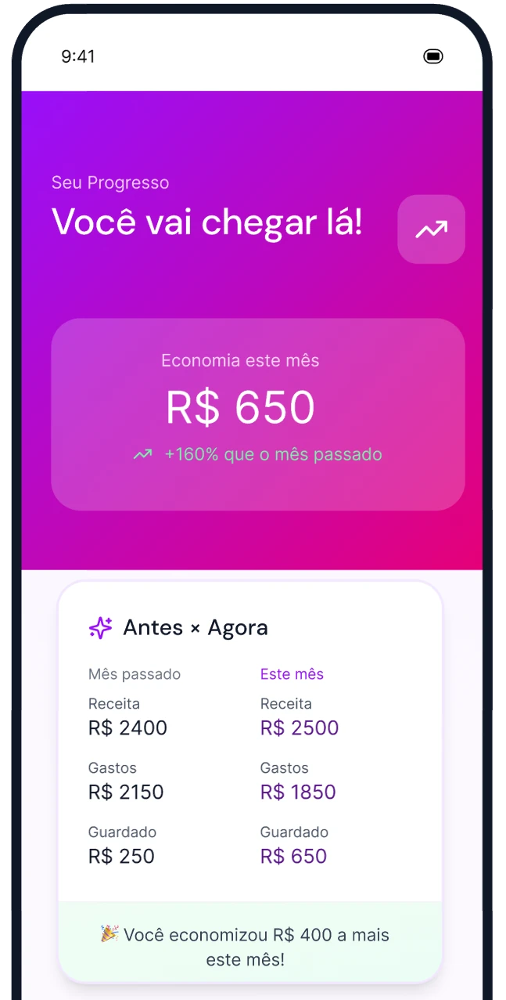
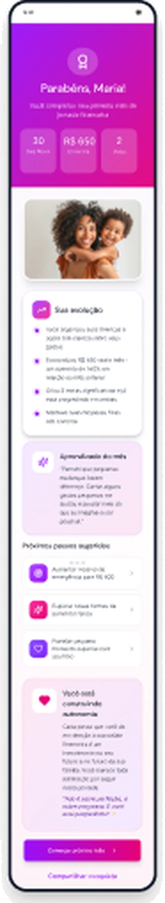

Organizar o dinheiro começa por saber para onde se quer chegar.
A ideia que guia o projetoUm projeto que cresce no meu tempo livre
Este é um projeto autoral, feito fora do meu trabalho principal. Ele ainda está em construção, e escolhi mostrá-lo agora justamente para deixar claro como eu trabalho: começo pela pesquisa e só depois desenho a solução.
A pesquisa foi feita com público próprio, para mapear metas, hábitos e conquistas financeiras na jornada de mães solo.
Metas
O que essas mães querem alcançar e como imaginam chegar lá, dos imprevistos do dia a dia aos planos de longo prazo.
Hábitos
Como o dinheiro entra e sai ao longo do mês, e o que já fazem hoje para se organizar.
Conquistas
O que conta como vitória para elas e como reconhecer o progresso sem cobrança.
O que as primeiras telas propõem
A primeira versão da jornada traduz os três eixos da pesquisa em quatro momentos: sonhar, acompanhar os gastos, ver o avanço e comemorar.




Sonhos antes de números
A tela inicial pergunta pelos sonhos e só depois pelos valores. A meta vira um projeto de vida, e não uma tarefa de planilha.
O mês em uma olhada
O saldo do mês fica no topo e o calendário marca os dias de pagamento, para a pessoa entender o próprio ritmo sem abrir extratos.
Linguagem acolhedora
Mensagens como "Você vai chegar lá!" trocam a cobrança pelo incentivo, coerente com o momento de quem cuida sozinha.
Progresso visível
Barras de progresso e o comparativo Antes × Agora mostram o avanço de forma concreta, mesmo quando a meta ainda está longe.
Discovery com público próprio
Levantamento de metas, hábitos e conquistas financeiras de mães solo.
Primeira jornada de telas
Quatro telas desenhadas a partir dos eixos da pesquisa.
Próximo passo
Testar as telas com mães solo e refinar a jornada a partir do que elas mostrarem.